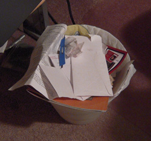
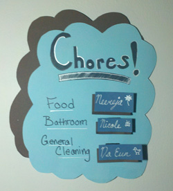
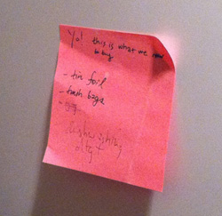
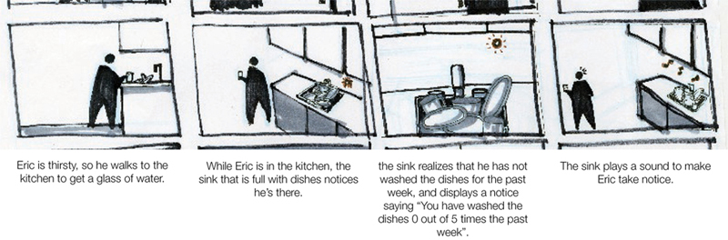
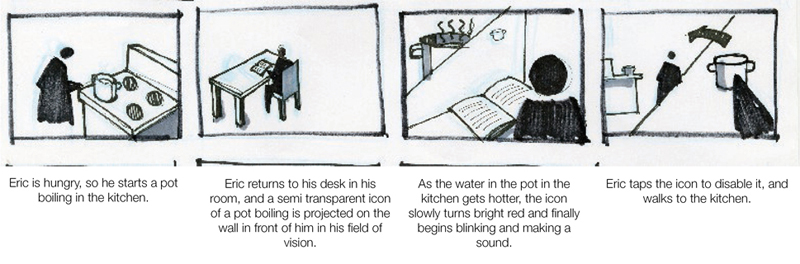

This project focused on the research phase and the synthesis of our research to create a concept to meet our findings. We synthesized 3 key research findings, and from there, developed our design opportunity. This project was created to focus on how technolgoy can be designed to be a maintenance agent. Most of the project timeline was spent on background research, and the presentation of the idea in a final video sketch.
VAUS, or Virtual Assistant for University Students, is a system designed for University students living together in apartments or houses. There are three main purposes of the system - to assist users in preventing hazardous situations in the house, to provide useful, context-based reminders to users, and to provide easily accessible, and mobile information on all appliances or electronics around the house.

Course
Basic Interaction Design
Date: April - May 2011
Methods Used
Directed Storytelling, Participatory Design, Bricks and Mortar, Contextual Inquiry
Team Members
Stephanie Chow, Ah Ra Cho, Blake Artushin
Project Background
We initially wanted to help users with boring but necessary tasks around their homes, while continuing to promote self sufficiency and indpendence from each member of the family.



However, we also knew from the beginning that people have trouble keeping track of everything in their lives, and that often, some of the more mundane tasks around the house fell to the wayside. This was where we began our research.
We began with three types of assitant home agents - a valet, maid, and maintenence service. Through various interviews, including speed dating and contextual interviews, we refined our focus to a maintenence agent to help inform students of the state of their homes.
Speed Dating
We drew a series of short storyboards to run through different scenarios with potential users to get their feedback about the different possible goals of VAUS.


Running through some potential uses for Project VAUS helped us validate our ideas - what would work, what wouldn't work, etc.
Our Solution
VAUS is an intelligent agent designed for University students living together in apartments or houses. Since students are often too busy with academics, extra curricular activities, and social lives to keep up with the maintenance of their living spaces, we knew our agent had a perfect place in the lives of university students.